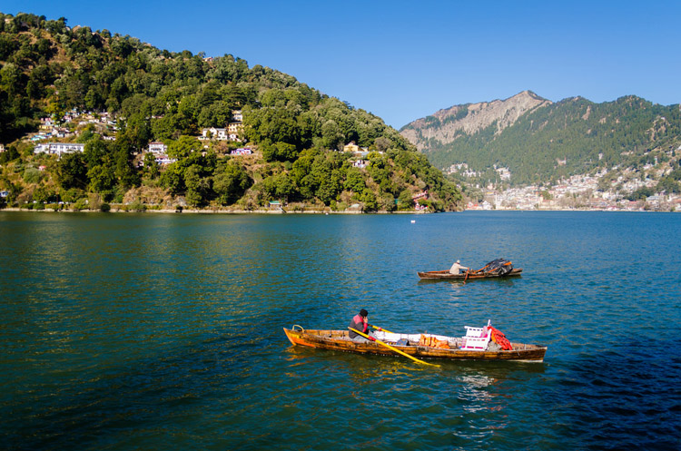

1. Nainital
About NainitalFamously referred to as the ‘Lake District of India’, Nainital, at 1938 meters above sea level, is a scenic delight that would be irresistible to any tourist. It is located around the famous Naini Lake in a valley. With mountains on all sides, Nainital is where you need to be for a rendezvous with nature. Some of the most important tourist attraction in nainital include:
Located at an altitude of 6000 feet, Mussoorie , the ‘Queen of Hills’, is beauty personified. With snow-covered Himalayan peaks on view, the land abundant in natural beauty has an excellent climate too. The winters are chilling and the summers are pleasant. The beauty of the place mesmerized Captain Young of the British army who made this place his residence in the year 1820. Mussoorie has seen countless footprints ever since the discovery, the list of excited tourists to enjoy the immense beauty of the place is growing. Here are the popular tourist attraction in Mussoorie.
Rishikesh is a blend of tranquility and adventure. Its location at the confluence of River Ganges and River Chandrabhaga and views of spectacular hills and various adventurous activities such as trekking, rafting and camping captivate nature lovers; the tranquility of the place with the importance attached to it as a pilgrim center touches the soul of pilgrims. Rishikesh is called as the Yoga Capital of the world. Some of the most important tourists destination in Rishokesh include:
Kedarnath , a small town located in Gahrwal Himalayan Ranges, is considered one of the holiest pilgrimages for those who follow Hinduism. It houses the famous Kedarnath temple. Kedarnath is located amidst majestic mountains. Here are some of the places to be visited in Kedarnath
Almora , is heaven to nature lovers. The picturesque district is located on the eastern side of Uttarakhand. The views of Himalayas are spellbinding. It is also famous for handicrafts, cuisine and wildlife. It has a rich cultural heritage. Given below are some of the places to be visited in Almora